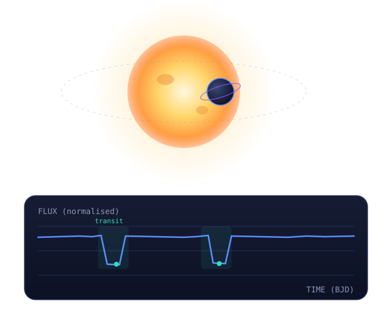

Robust dip detection
Box Least Squares and matched filtering surface periodic flux dips buried under detector and photon noise, even in crowded fields.
ExoDetect is an end-to-end AI pipeline that finds faint periodic dips in TESS light curves, disentangles transits from eclipses, blends and stellar variability, and reports physical parameters with calibrated confidence.

Each stage is modular, reproducible and instrumented so every detection can be traced and trusted.
Load TESS FITS light curves and metadata
Remove instrument trends & clip outliers
BLS period search for periodic dips
CNN sorts transit / eclipse / blend / variable
Estimate period, depth, duration + errors
Box Least Squares and matched filtering surface periodic flux dips buried under detector and photon noise, even in crowded fields.
A convolutional classifier separates planetary transits from eclipsing binaries, photometric blends and intrinsic stellar variability.
Every event is scored with a signal-to-noise ratio and false-alarm probability so weak detections are flagged transparently.
Transit model fitting recovers orbital period, transit depth and duration, with uncertainties from posterior sampling.
Probabilities are calibrated against a labelled validation set of confirmed planets, false positives and binaries.
Auto-generated vetting reports bundle plots, parameters and methodology into a concise, reproducible summary.
High-cadence light curves from a single sector — 20–30k stars — sourced from the MAST archive.
Walk through the full workflow — from uploading a sector to reading a vetted transit report.